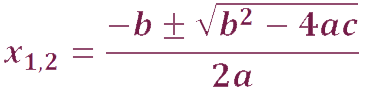
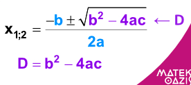
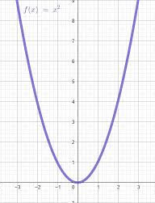

Mi az a másodfokú egyenlet?
A másodfokú egyenlet általános alakja:
ax2 + bx + c = 0
Ebben az a, b és c együtthatók meghatározzák az egyenlet formáját és gyökeit.
A másodfokú egyenlet megoldóképlete
A másodfokú egyenlet megoldásához az alábbi képletet használjuk:

A képlet elemei:
- -b: Az ellentett együttható
- ±: Két lehetséges megoldás (pozitív és negatív ág)
- √(b2 - 4ac): A diszkrimináns gyöke
- 2a: Az osztó (kettős szorzó)
Diszkrimináns kiszámítása
A diszkrimináns képlete:
Δ = b2 - 4ac
A diszkrimináns megmondja, hogy hány valós gyöke van az egyenletnek:
- Δ > 0: Két különböző valós gyök
- Δ = 0: Egy valós gyök (kettős gyök)
- Δ < 0: Nincs valós gyök

Parabola típusok
A másodfokú egyenletek megoldásakor különböző parabola típusokkal találkozhatunk, attól függően, hogy milyen az egyenlet diszkriminánsa (Δ):
- Felnyíló parabola: Ha a > 0, akkor a parabola felfelé nyílik.
- Leenyíló parabola: Ha a < 0, akkor a parabola lefelé nyílik.
- Elméleti parabola: Ha Δ = 0, a parabola csúcsánál találkoznak a gyökök (kettős gyök). Ez a parabola érinti a tengelyt.
- Komplex parabola: Ha Δ < 0, a parabola nem metszi a tengelyt, így nincs valós gyöke.

Próbáld ki!
Add meg az egyenlet együtthatóit, és nézd meg a megoldást:
Feladatok
Oldd meg a következő egyenleteket:
- x2 - 5x + 6 = 0
- 2x2 - 4x - 6 = 0
- x2 + 4x + 5 = 0
Hol használjuk a másodfokú egyenleteket?
A másodfokú egyenletek alkalmazása széleskörű: megtalálhatók a fizikában, a mérnöki tudományokban, a közgazdaságtanban, és akár a biológiai modellekben is.